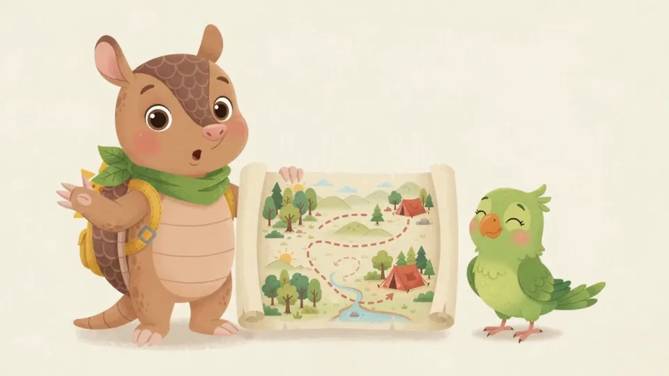
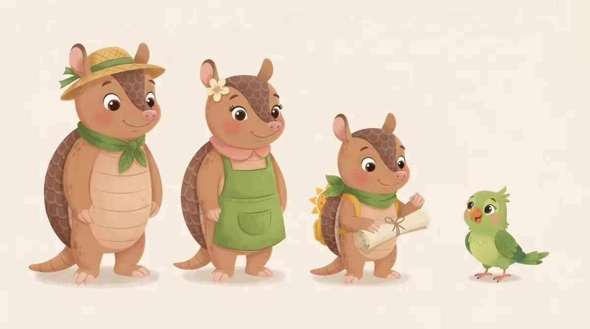

Para os pais
Muitos vídeos infantis têm cortes rápidos, cores fortes e barulho o tempo todo. O Tatu Tales vai pelo caminho contrário: segue o que pediatras e especialistas em desenvolvimento infantil recomendam para essa idade.
Cada episódio é um momento de qualidade para assistir junto, conversar sobre a história e depois levar a aventura para o quintal, para a sala ou para a imaginação.

Ritmo calmo
Cenas mais longas, falas pausadas e música suave. Nada de estímulo em excesso.
Cores leves
Ilustração em tons de aquarela, com o céu, a terra e as folhas da floresta brasileira.
Convite para brincar
Toda história termina com uma ideia simples de brincadeira para fazer em família.
A turma

- Tatu
Curioso e calmo, leva sempre o mapa e a mochila de sol. Gosta de descobrir as coisas devagar. - Tica
Uma periquita agitada e falante. Equilibra o jeito tranquilo do Tatu e deixa tudo mais divertido. - Pai
Grandão e brincalhão, de chapéu de palha. Gosta de explorar a floresta junto com o Tatu. - Mãe
Carinhosa e paciente. Acolhe, explica e ajuda o Tatu a encontrar as respostas sozinho.
E a turma vai crescer! Ao longo dos episódios, o Tatu encontra outros amigos que moram na floresta e faz novas amizades pelo caminho. Cada bicho novo traz um jeito diferente de ver o mundo.
Onde encontrar o Tatu
Episódios novos toda semana. Em todas as redes, procure por @tatutalestv.